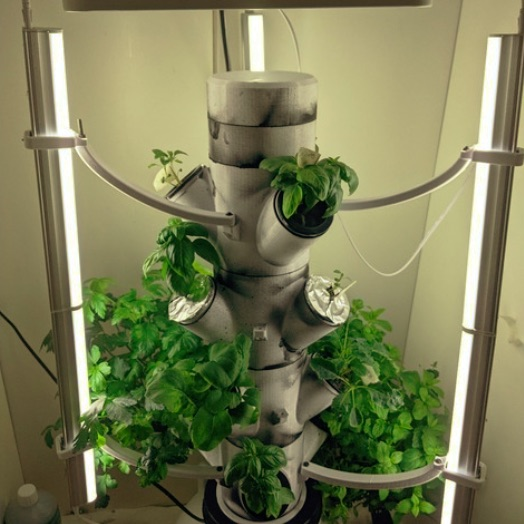

Welcome to my portfolio, hope you find what yer lookin for
A lifelong interest in cultivation has led me in recent years to hydroponics, the method of growing plants in water.
 In the last year, i've led an effort to bring a hydrogen fuel cell powered hydroponics tower to UNC's Campus and written a 30 page exploration of the vertical farming landscape. You can find that paper here.
san francisco bike theft, lots of other Working for Zoomo, I used data from the [link] SFPD and internal data to create heatmaps for the company
My coursework at UNC has familiarlized me with ML methods statistical simulation, data pipelines, supervised and unsupervised machine learning methods and tools including TensorFlow, Hugging Face[escape an apostrophe]s BERT, and t-distributed stochastic neighbor other data proj?? dune? indep proj? api proj?
include info from your site, from VJ's site
Links to art? or take this section out